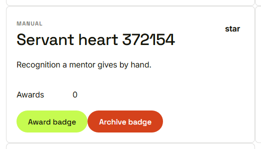
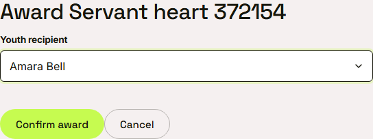
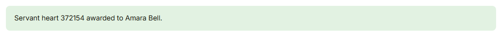
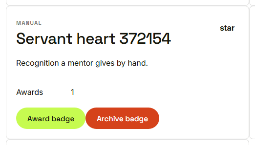

Waypoint · Video 050
Awarding badges
Manual recognition, recorded and audited
A manual badge

Only manual badges have an award button
Choose the youth

Confirm award or cancel
Awarded

The award is confirmed

Awards: one
Automatic badges
Given by Waypoint when the rule is met
Exactly once per youth
A notification is sent
Things to remember
Pick the youth, then confirm
Who awarded it, and when, is recorded
The award is written to the audit log
Archived badges earn no new awards